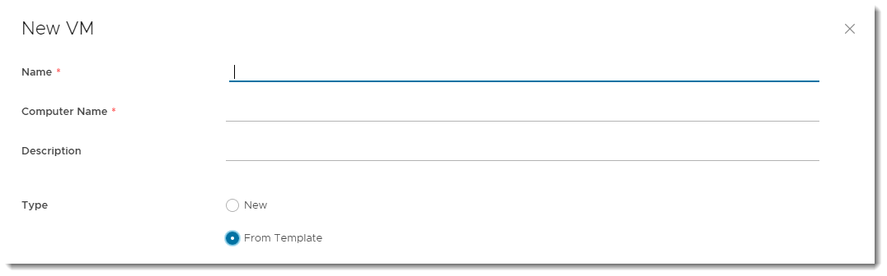
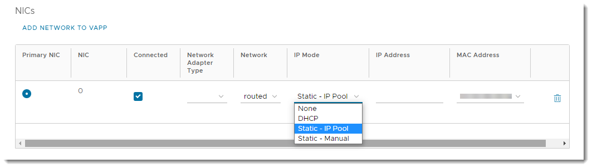

UKCloud Limited (“UKC”) and Virtual Infrastructure Group Limited (“VIG”) (together “the Companies”) – in Compulsory Liquidation
On 25 October 2022, the Companies were placed into Liquidation with the Official Receiver appointed as Liquidator and J Robinson and A M Hudson simultaneously appointed as Special Managers to manage the liquidation process on behalf of the Official Receiver.
Further information regarding the Liquidations can be found here: https://www.gov.uk/government/news/virtual-infrastructure-group-limited-and-ukcloud-limited-information-for-creditors-and-interested-parties
Contact details:
For any general queries relating to the Liquidations please email ukcloud@uk.ey.com
For customer related queries please email ukcloudcustomers@uk.ey.com
For supplier related queries please email ukcloudsuppliers@uk.ey.com
How to create a virtual machine from a template
Overview
To simplify the process of creating a virtual machine (VM), you can use a pre-built VM template from a catalog.
For information about catalogs, see How to create a catalog. For information about creating a VM from scratch, see How to create a VM from scratch.
Creating a VM from a template
In the VMware Cloud Director Virtual Data Center dashboard, select the VDC that contains the vApp in which you want to create the VM.
In the left navigation panel, under Compute, select vApps to view a list of vApps within the VDC.

Tip
To create a standalone VM, in the left navigation panel, select Virtual Machines, then click New VM.
In the card for the vApp in which you want to create the VM, select Actions > Add > Add VM.

Tip
To create a new vApp, see How to create a vApp.
In the Add VMs dialog box, click Add Virtual Machine.

In the New VM dialog box, enter a Name, Computer Name and Description for your VM.
Note
Name is a name to identify the VM, Computer Name is the host name of the VM.
The Computer Name is copied from the Name field but can contain only alphanumeric characters and hyphens so you may need to edit it if your VM Name contains spaces or special characters.
From the Type radio buttons, select From Template.

In the Templates section, select the template that you want to use for your VM, depending on your required operating system and VM size.

Tip
For information about creating vApp catalogs, see How to create a vApp catalog
In the Storage section, set the Storage Policy for the VM.

In the NICs section, you can set the IP Mode to determine how IP addresses are assigned:
DHCP Cloud Director interacts with the OS via VMware Tools to use DHCP rather than static IPs. You'll need to define a DHCP server on your edge gateway. Check with UKCloud or your organisation administrator that this is set up before you use it.
IP Pool is the usual method, which injects an IP address into the VM via VMware Tools from a list of available IP addresses. The address may vary with each boot, but there is a check box to keep IP address assignments elsewhere within the UI once the VMs are created.
Manual IP is similar to IP Pool, but you need to enter a valid IP Address from the pool, which the VM will then keep.

Note
We recommend using the VMXNET3 network adapter where possible. The VMXNET virtual network adapter has no physical counterpart and is optimised for performance in a VM. Because operating system vendors don't provide built-in drivers for this card you must install VMware Tools to have a driver for the VMXNET network adapter available.
If you want a more comprehensive guide on network adapter types, see the VMware documentation for Network Adapter Basics.
When you're done, click OK.
Back in the Add VMs dialog box, you can create more VMs or click Add when you're done.
Next steps
After you initially create your VM, you may want to edit some of the properties to finish setting it up. For more information, see How to view and update virtual machine settings.
If you haven't already, you may want to create networks to enable your VMs to communicate with each other and the outside world. For more information, see How to create a routed VDC network and How to create an isolated VDC network.
You may also want to create rules to enable traffic into and out of your VMs. For more information, see How to create firewall rules and How to create NAT rules.
Feedback
If you find a problem with this article, click Improve this Doc to make the change yourself or raise an issue in GitHub. If you have an idea for how we could improve any of our services, send an email to feedback@ukcloud.com.